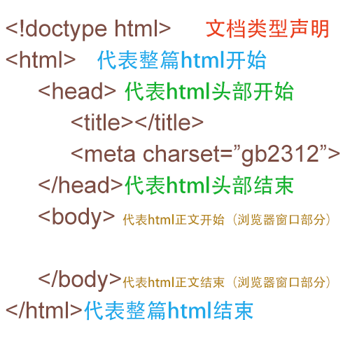

-
-
发布时间： 2020-05-023 18:10:06
学习完了整个的vue，组合里总结了博主学习vue从无到有的一个过程，里面还有完成的vue先过目哦，走过路过不要错过，点进来瞧一瞧。

-
-
发布时间： 2020-05-23 22:36:31
从HTML一直到Jquery满满的干货，还有小小的Demo用来实践，gogogo！！！
-
-
发布时间： 2020-05-23 22:44:44
来，我们一起了解多线程、反射、网路编程。贼详细，不进来看看怎么知道符不符合你的胃口！！！
-
-
发布时间： 2020-05-13 23:09:46
就问想知道什么？增删改查？事务处理？索引和视图？触发器？存储过程？还是游标？这里都有
-
-
发布时间： 2020-05-24 00:27:17
里面java的算法题和c++的算法题有的哦！涉及到了一些基础的算法。比如：动态规划、回溯、二分法等等
-
-
发布时间： 2019-03-27 23:27:31
Gorit的python学习笔记哦，我的室友————python大佬，快进去围观，不要错过，全部是干货！！！
该模块正在持续更新中，里面涉及JDBC的封装、Servlet、JSP、SSM框架等等内容。